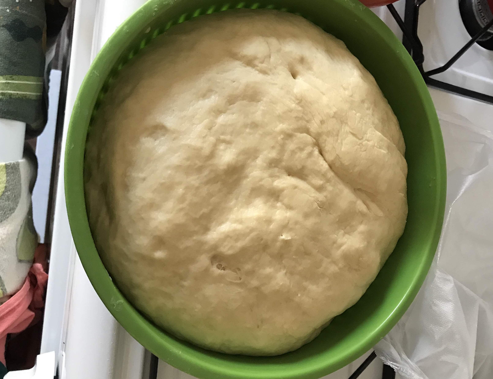
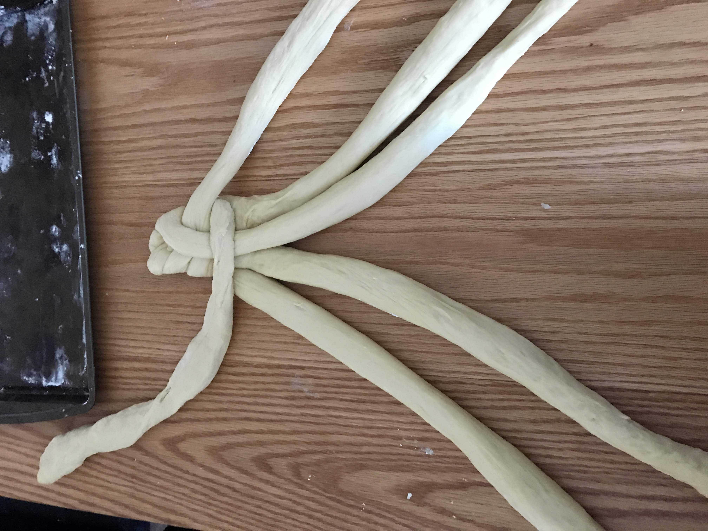
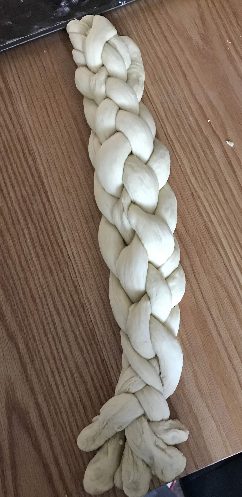
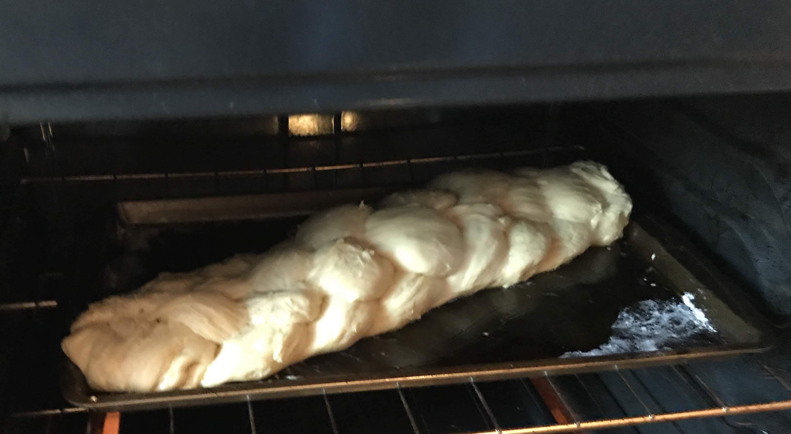
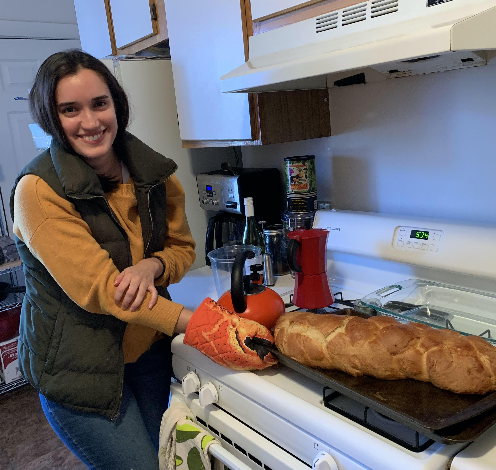

-

Step 1-3: Dissolve yeast, 1tbs of sugar in 1 3/4 cups lukewarm water, Knead the dough for 6 to 8 minutes. The dough has finished kneading when it is soft, smooth, and holds a ball-shape.
-

Step 4:Gather the ropes and squeeze them together at the very top.
-

Step 5: Braid the ropes together like braiding hair or yarn and squeeze the other ends together when complete.
-

Step 6: Gather the ropes and squeeze them together at the very end.
-

Step 7: Bake, rotating the baking sheet halfway through, until the challah registers 190°F in the middle (30 to 35 minutes total).
-

Step 8: Let the challah cool on a cooling rack until just barely warm. Slice and eat.